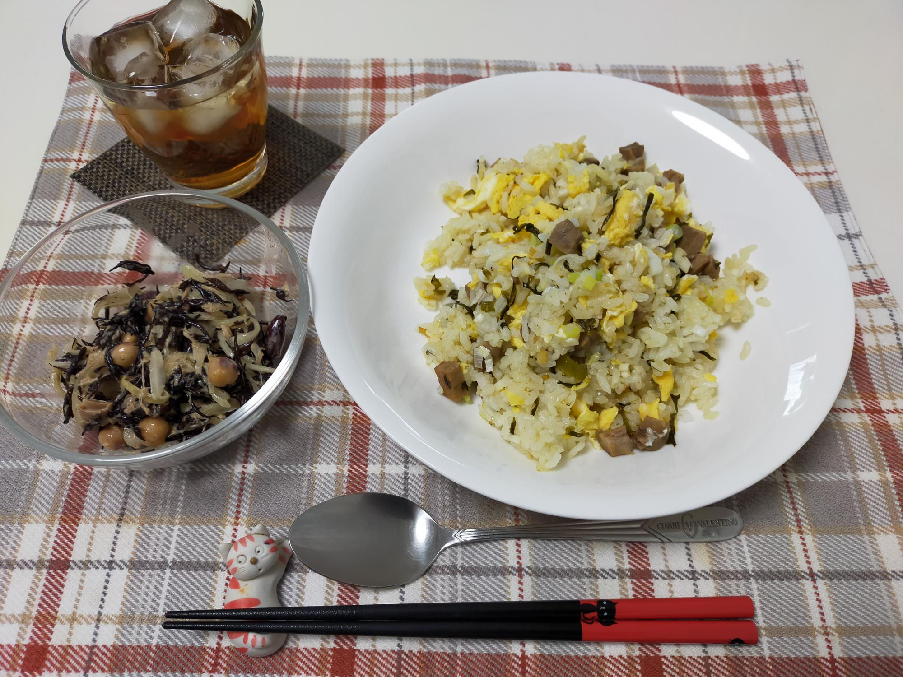

高菜チャーハン
材料・金額
| 材料 | 購入金額 | 使用量 | 金額 | kcal |
|---|---|---|---|---|
| チャーシュー（半量） | - | - | 234 | 500 |
| にんにく1球 | 322 | 1片 | 27 | - |
| ねぎ3本 | 162 | 1本 | 54 | - |
| ごま高菜1袋 | 235 | 1/5袋 | 47 | 18 |
| 卵1pac | 192 | 2個 | 38 | 152 |
| ごはん5kg | 1,922 | 180g | 70 | 680 |
| その他調味料分 | - | - | - | 50 |
| 合計（640g） | - | - | 470 | 1,400 |
| 1人分（合計×0.5） | - | - | 235 | 700 |
作り方
- にんにく、ねぎはそれぞれみじん切りにする
- チャーシューは8mm角ぐらいに切る
- 卵を溶く
- フライパンにごま油小1を熱し、↑の卵液を流しいれ半熟で取り出す
- 同じフライパンに、チャーシュー・にんにく・高菜（40g、大2くらい）・ウェイパー小1を入れて炒める（油は足さない）
- 暖かいご飯を入れて全体を炒め合わせる
- 半熟卵を戻しいれ、炒める
- ネギを入れ、全体を炒め味見をし、必要ならば塩コショウで整えて出来上がり
振り返り
チャーハンは惜しみなく油を使ったほうが美味しいでしょうが、私はなるべく減らしています。使っているフライパンはダイヤモンドコートのものですが、相当な年数使いこんでいるため、部分的に焦げつきます。チャーシューにしっかり味がついているので、味付けは控えめにしていて、8.の塩コショウは、私はしていません。チャーハンには卵の塊があってほしいので、半熟卵を作って取り出しておく方式にしています。少々面倒ですが、おふくろさんの味です。